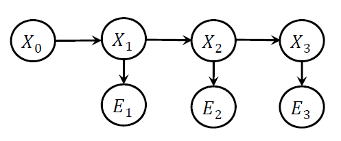

2018-2019春夏学期人工智能课程内容整理。不定期更新。
第一部分：搜索
一般搜索
Uninformed search：无信息搜索
盲目搜索，等同于蛮力搜索，常用方法：
- DFS
- BFS
- IDS
迭代加深搜索，DFS的改进版，过程分为多个iteration，每个iteration内进行深度限制为n的DFS，n从0开始每次迭代增加1，直至搜索结束。 - UCS
Uniform-cost search，BFS的改进版，使用优先队列实现。扩充cost最小的节点，其中cost为从起点到某节点边上权重之和。算法结束得到连接至目标节点的最短路径。边权重相同时退化为BFS。
Informed search：有信息搜索
通过某种方式得到关于某节点至目标节点的“距离”信息，根据信息设计的搜索。称为启发式搜索。
关键在设计启发式函数$h(n)$，要求：
- $h(n)\ge0$
- 满足广义三角不等式：$h(n) \le cost(n,n+1) + h(n+1)$
常用方法：
GBFS
Greedy best-first search，根据启发式函数选择搜索路径，$h(n)$表示第n节点距目标节点距离，每次选择$h(n)$最小的节点作为下个节点。A* search
同时考虑cost和heuristic function，判断依据：$f(n)=g(n)+h(n)$，g为cost，h为距目标距离。选择$f(n)$最小的节点作为下个节点。
3.13
Adversarial Search：对抗搜索
本课程只讨论如下特征的对抗搜索：
- zero-sum游戏：一局游戏后，双方受益损失总和为零，即一定一方受益，另一方损失
- 确定状态游戏：每个状态下关于这个状态的全部信息已知
Game Tree：博弈树/游戏树
博弈树是一种基本对抗搜索状态空间结构，以下搜索算法均已博弈树为基础。
博弈树结构如下：
- 每个节点：博弈/游戏过程的某个状态
- 边：表示两个游戏状态的连续关系
Minimax Search：最小最大化搜索
minimax search假设对抗双方都做出最佳选择，一方使目标函数尽可能大，另一方使其尽可能小。
特点：
- 为博弈树每个节点计算minimax value
- MAX方，MIN方轮流决策
- 深度访问，递归访问
- 需要最终状态的目标函数值
理想情况下，博弈树完全，从根节点按照MAX、MIN双方轮流的顺序进行决策，每次决策递归地确定当前节点的minimax value，最后将整棵博弈树节点全部填满。
minimax search为博弈树节点规定了如下属性：
- minimax value
H-Minimax Search：现实情况下，完全博弈树过大，遍历不现实，采用depth-limited的方式：限制最深的访问深度，将最深层的节点视为最终的叶节点。使用heuristic策略为这些叶节点估计minimax value，然后同理想情况下一样进行搜索。
alpha-beta剪枝：用于减小博弈树规模。这种策略为节点规定了如下属性：
- minimax value
- alpha、beta作为参考边界：[alpha, beta]
alpha、beta初始化为负、正无穷，每次搜索一个节点的子节点后，根据子节点minimax value大小&当前节点角色（MAX或MIN），确定当前节点的一个边界，并回溯至整棵树的根节点，途中所有经过节点的边界都进行更新。
边界描述了当前节点minimax value的取值范围，根据边界可以避免访问一些子树，即剪枝。
Monte Carlo Tree Search：蒙特卡洛树搜索
基本思想：基于多次实验的统计情况，构建一棵博弈树的子树，其中节点为实验中访问到的节点。根据每个节点的访问次数和对应游戏结果计算选择该点为下一个状态的概率，选择概率大的为下个状态。
决策核心依据：概率！！
每个节点属性：
- 实验中由此节点开始最终游戏胜利的次数
- 实验中此节点总到达次数
MCTS过程如下，反复执行：
- selection：从根节点（当前状态节点）随机进行决策（rollout），确定一条结束于当前叶节点的路径
- expansion：从当前叶节点进行一次rollout，到达次态，初始化次态属性0/0
- simulation：从expansion扩充出来的节点进行rollout，直至游戏结束状态
- backpropagation：从simulation得到的最终状态按照simulation的路径回溯更新路径上全部节点的属性，直至根节点
3.20
Constraint Satisfaction Problems 约束满足问题
CSP有如下特征：
- variable set：一些可赋值变量构成的集合
- domain set：变量取值构成的集合
- constraint set：约束条件构成的集合
CSP更重视满足约束问题的一个解，更重视结果而非过程。
Constraint Graph 约束图
一种描述约束问题的结构：
- node: 问题的变量
- edge: 变量的相关（节点之间连接一条边表示两个节点表示的变量存在相互约束关系）
延伸：Hyper Graph 超图
超图中引入超边（Hyper Edge），连接多个节点，表示多个变量之间存在约束关系。超图可以通过化简成为普通的约束图。
Backtracking 回溯法
经典的解决CSP的算法，结合树使用递归实现。一种改进的DFS，有两点改进：
- 固定
- 一次给一个节点的变量赋值
- 赋值按照固定顺序
- 检查约束
问题：
- 先给哪个节点变量赋值？which variable?
- 给变量赋哪个值？which value in domain?
解决策略：解决策略均从能够使搜索树尽可能小的思想出发
- which variable? 两种策略
- 给自由度最大的节点变量赋值（Degree heuristic）
- 给取值可能最少的节点变量赋值（Minimum-remaining-value, MRV）
- which value?
- 选择使未来有更多种可能的值进行赋值（Least-constraining-value heuristic）
- domain能否动态缩小？→ Inference的讨论
Inference：推理
推理用来动态减小domain的大小，从而减小可能的搜索空间。区别了回溯法与普通DFS。
回溯法中要保证两个一致性：
- Node Consistency：每个节点全部取值满足自身约束，即在值域内取值
- Arc Consistency：每个节点自身全部取值满足邻居节点的约束
保证Arc Consistency的两种方法：
Forward Checking
进行一个变量赋值后，确定与其构成约束关系的邻居节点变量的值域，去掉illegal的可能性。AC-3算法（伪代码见ppt）
可视为每次对节点赋值前的初始化，用来修改节点的值域，检查arc consistency。如果满足一致性，进行下一轮赋值；如果不满足，回溯到上个状态。
AC-3比forward checking稍微快一点。
回溯法整体流程：赋值（同时保证node consistency）→ 做forward checking/检查arc consistency → 赋值 → …
3.31
第二部分：推理
Knowledge and Reasoning 知识表示与推理
基本定义
- 断言sentence：有真伪之分的一个判断
- 语法syntax：规定了断言的格式
- 语义semantic：规定了断言的真伪
- 模型model：使断言$\alpha$为真的条件$m$，条件$m$的集合记为$M(\alpha)$
- 蕴含entailment：描述两个断言之间的关系，$KB\vDash\alpha$，表示$KB$蕴含$\alpha$，即$KB$为真时，$\alpha$一定为真，也意味着$M(KB)\sube M(\alpha)$
推理语法
语法定义
规定了断言之间进行推理的规则、运算规律。
用P表示断言，断言之间运算结果仍为断言，运算如下：
- negation: $\neg P$
- conjunction: $P_1 \land P_2$
- disjunction: $P_1 \lor P_2$
- implication: $P_1 \implies P_2$ 等价于 $\neg P_1 \lor P_2$
- biconditional: $P_1 \iff P_2$ 等价于 $(P_1\implies P_2)\land(P_2\implies P_1)$
运算律
- commutativity: 交换律
- associativity: 结合律
- double-negation elimination: 双重否定相消
- contraposition: 逆否不变 $(\alpha\implies \beta) \equiv (\neg\beta \implies \neg\alpha)$
- De Morgan: 德摩根律
- distributivity: 分配率
Resolution Rule 归结法
一种对已知断言集合进行推理的方法。
合取范式：CNF
使用归结法之前要将断言集合整理成CNF（合取范式）格式。格式为或语句块求与运算。
CNF：$(…\lor…\lor…)\land…\land…\land(…\lor…\lor…)$
推理前明确两个事物：
- observation：已知某断言的真伪
- goal：要推理出的结果，某断言为真or伪
找到CNF的一个子式，要求其中包含observation的互补断言与goal断言，使用归结法，互补断言消去，剩下的为推理结果。
E.g.
已知CNF: $(\neg B_{1,1} \lor P_{1,2} \lor P_{2,1})\land(\neg P_{1,2} \lor B_{1,1})\land(\neg P_{2,1} \lor B_{1,1})$
已知：$\neg B_{1,1}$
目标：证伪$\neg P_{1,2}$
归结法：$\frac{\neg P_{1,2}\lor B_{1,1},\space \neg B_{1,1}}{\neg P_{1,2}}$, $\frac{\neg P_{1,2},\space P_{1,2}}{false}$
Forward chaining 前向链接
使用AND-OR Graph进行推理。
前提：
- 已知全部的推理信息
e.g.
$A \land B \implies C \\
A \\
B \\
C \implies D \\
…$
使用所有断言构建一个AND-OR Graph，对每个推理的节点维护一个值，值为这个推理所需要的前提数量。E.g. $A \land B \implies C$构成的推理节点的值为2。
更新流程：
从最开始的前提断言（已知）出发，检查该断言连接的所有推理节点，使节点值减少1。最后所有节点值都为0时，推理结束得到结论。
Backward chaining 后向链接
没详细讲，略过。
4.20
Probabilistic Reasoning 概率推理
更常见的推理模型，基于概率进行推理判断。
结构：贝叶斯网络 Bayesian Network（BN）
使用有向图表示一群随机变量之间的关系。
- 节点：随机变量的条件概率，父节点为条件下本节点随机变量的条件概率
- 有向边：因果关系
BN的联合概率：$P(X_1,\dots, X_n) = \prod_i P(X_i | parents(X_i))$
推理模式
- causal reasoning 因果推理：根据父节点推断子节点信息
- evidence reasoning 结果推理：根据子节点推断父节点信息
- intercausal reasoning 互相推理：任意两节点进行信息推理
D-separation
判断一个BN里面哪些节点是条件独立的，满足下列条件，称为D-separation，即条件独立。
判据：给定一个节点的父节点（已知一个节点的父节点信息）时，该节点与其非后代节点条件独立。
概率推理实现
枚举法 Enumerating
将BN图逐渐合并的过程，即将CPT（条件概率表）逐渐合并的过程。
- 步骤：转化为factor（反归一化）→求联合分布（用BN联合概率公式）→对无关变量求和，只剩需要变量
- 变量求和顺序：先求和度小的节点
消去无关变量的trick：每次合并完几个BN的节点后就将无关变量求和消去，不要到最后再消。
采样法 Sampling
枚举运算消耗大，效率低，使用采样法进行近似推理（Approximate Inference）。
几种采样法：
Prior sampling：
在$[0,1)$范围内取随机数，按拓扑顺序对BN中对所有随机变量根据CPT描述的条件概率对$[0,1)$分段，根据随机取值所在位置确定随机变量取值。进行多组随机变量取值，最后统计满足要求的状态组合出现的频率作为概率。
※产生大量采样样本
Rejection sampling：
实际上还是prior sampling，只不过在过程中对BN中某些已知的随机变量，固定这些值不变然后进行推理。即，先进行多组实验得到大量随机变量取值组合，在其中拒绝掉不符合已知条件的组合，用剩下的组合中计算所需的概率。
※产生大量采样样本，然后拒绝掉不符合证据的，用剩下的计算概率
Likelihood weighting sampling：
权重w初始化为1，对BN中所有节点按拓扑顺序推理，用已知变量更新权重$w\leftarrow w\times P(e|parents(e))$，对未知变量用取样确定取值，最终得到目标变量取值和对应权重w。
※只生成了满足证据的样本
时间模型 Temporal Model
对随时间变化的BN建立的模型，有两个假设作为前提：
- Markov性：随机变量$X$在$t$时刻状态仅与$t-1$时刻相关
- Time-invariant：时不变性，$P(X_t|X_{t-1})$与$t$无关，$t$不影响分布
状态观测模型 State-Observation Model
一种时间模型，BN节点包括两种随机变量：
- 状态变量$X_t$，满足Markov性
- 观测变量$E_t$，只受对应的$X_t$影响，与$t$时刻之前的状态和观测值独立，即$P(E_t|X_{0:t},E_{0:t-1})=P(E_t|X_t)$
隐马尔科夫模型 Hidden Markov Model（HMM）
随机变量取值离散，且每个状态/观测结果只用一个随机变量描述的状态观测模型。

基于时间模型的推理
核心想法：只有相同的time slice的状态变量和观测变量之间才可以根据CPT进行概率推理计算，因此进行跨time slice推理时要想好怎么将跨time slice根据推理关系转换到同个time slice下。
要知道为什么做出特定的数学公式推导，要结合BN图才能更好理解。
三种基本的推理：
Filtering
- 状态估计
- 求$P(X_t|e_{1:t})$，即已知过去全部观测结果，求当前状态概率
- 递归地推理，在HMM节点上拓扑地进行
- 迭代式：$P(X_{t+1}|e_{1:t+1})=\alpha P(e_{t+1}|X_{t+1})\sum_{x_t}P(X_{t+1}|x_t)P(x_t|e_{1:t})$
Prediction
- 状态估计
- 求$P(X_{t+k}|e_{1:t})$，即已知过去，求未来某时刻状态概率
- 递归地推理，在HMM节点上拓扑地进行
- 迭代式：$P(X_{t+k+1}|e_{1:t}) = \sum_{x_{t+k}}P(X_{t+k+1}|x_{t+k})P(x_{t+k}|e_{1:t})$
Smoothing
- 用更多evidence“平滑”一个过去的状态变量
- 求$P(X_k|e_{1:t})$，已知一系列观察结果，求过去某个状态“平滑”之后的概率
- 用了更多的evidence
- 前向、后向信息传递
- 算式：$P(X_k|e_{1:t}) = \bold{f}_{1:k} \times \bold{b}_{k+1:t}$
其中$\bold{f}_{1:k} = \alpha P(e_k|X_k)\sum_{x_{k-1}}P(X_k|x_{k-1})P(x_{k-1}|e_{1:k-1})$，称为前向传递；$\bold{b}_{k+1:t}$为后向传递，表达式复杂，见PPT
4.30
粒子滤波 Particle Filter
使用随机采样方法近似估计状态空间模型（以概率的形式）。所谓粒子，就是样本。
步骤
- 初始化：在状态空间上均匀采样（散开粒子）
- 采样：按照状态转移模型进行一步状态转移，得到更新一次之后的样本
- 加权：根据问题本身设置加权策略，对所有样本加权，归一化权重为1
- 重采样：根据权重选择权重较高的几个状态，只在这几个状态上重采样，然后重复步骤2~4至结束
按照上述步骤，算法运行结束，得到一个近似的状态值（由样本粒子描述）。粒子（样本）数量越多，结果越接近真实状态。
…